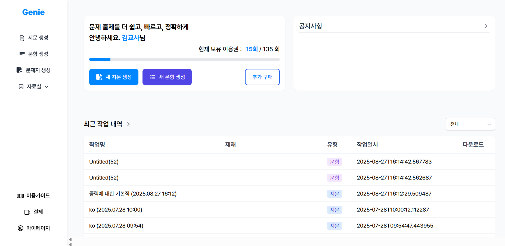
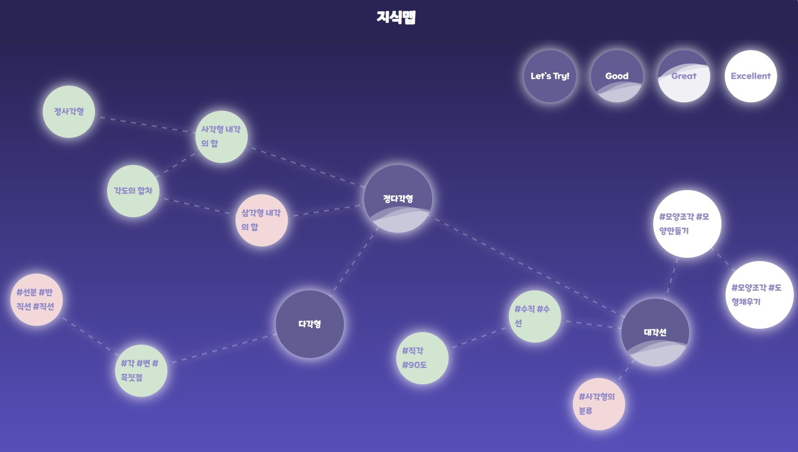
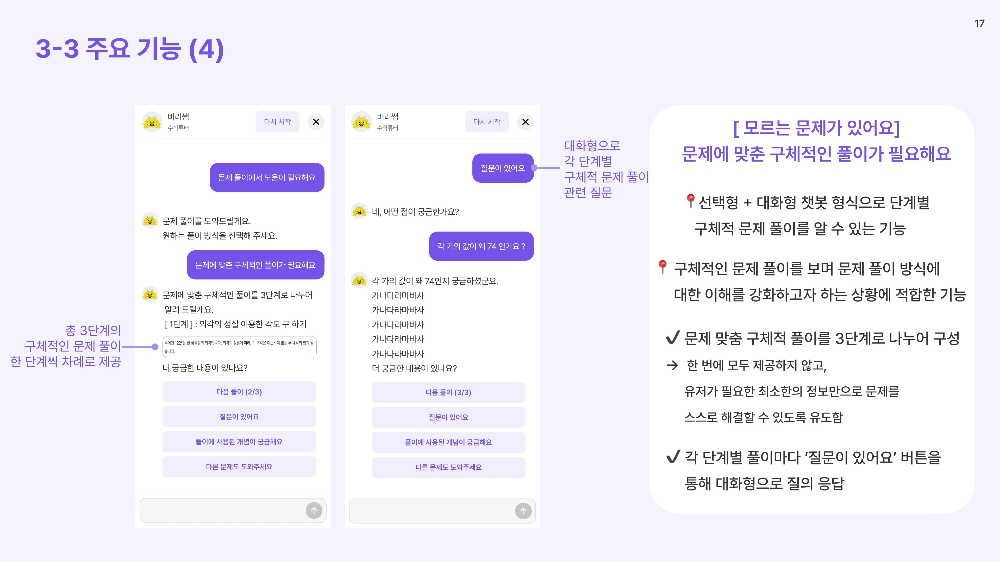
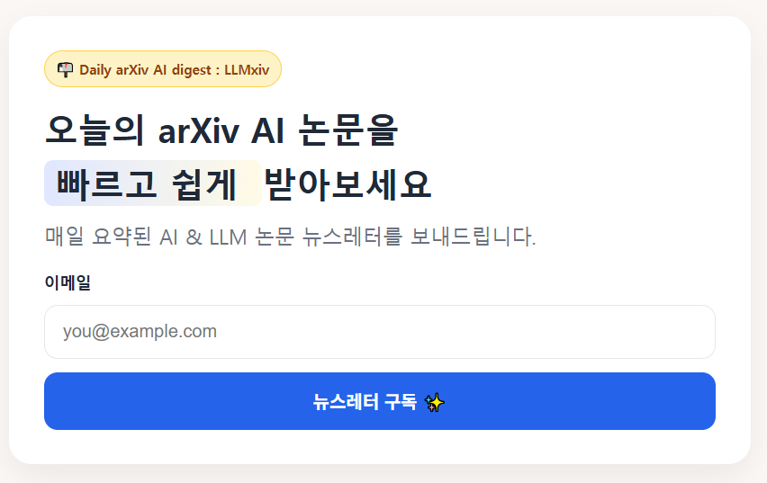
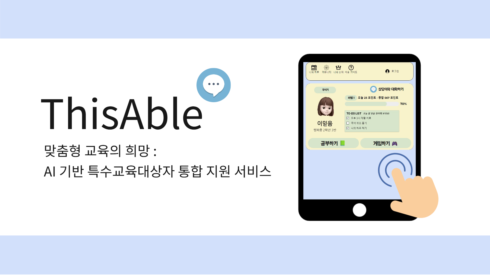

Understanding people through data, building structure through technology.
A Bridge Builder closing the gap between technology and people
Combining a foundation in Educational Technology with hands-on AI development,
I design solutions that put user experience and organizational growth at the center.
Jun 2024 — Sep 2025
Chunjae Education · Digital Learning Division
Related Projects
AI-powered platform for automated CSAT Korean passage and question generation

Role Planning & API Development
Problem
Approach
Outcome
AI-powered adaptive learning system for elementary school math

GitHubRole IRT & CAT logic design and implementation, frontend development
Problem
Approach
Outcome
Accuracy improvement for an in-house similarity-based learning chatbot for elementary students

BlogRole Planning & Development
Problem
Approach
Outcome
Aug 2025 — Oct 2025
MetaCode
Jun 2022 — Feb 2023
Korean Educational Development Institute (KEDI) · Educational Statistics Center
Feb 2019 — Feb 2024
Ewha Womans University
Automated newsletter service that daily crawls, summarizes, and translates AI papers from arXiv Live

GitHubRole Service planning, backend development, deployment & operations
Problem
Approach
Outcome
Korea TOEIC Committee · Mar 2026
TEPS Council · Jun 2024
Korea Data Agency · Jul 2025
Ministry of Employment and Labor · Jul 2025
AWS · Feb 2025
Korea Data Agency · Jun 2024
Korea Foundation for Science and Creativity · AI support service for students with special educational needs

GitHubRole Service planning, data analysis, GPT fine-tuning & chatbot development
Problem
Approach
Outcome
I design services that maximize user experience and outcomes grounded in instructional design principles, and I bring theoretical models to life as working products.
I don't assume the newest technology is always the right choice. I believe the best solution depends on context.
When a task demands it, I actively explore unfamiliar territory to deliver the best result. I've continuously expanded my own scope—from Python-based data analysis to LLM and GraphDB applications.
I enjoy pushing for improvements in team processes and culture. I'm especially drawn to experience design through HR data analysis.
I've frequently served as the bridge between product and engineering teams, translating requirements in a language both sides can understand.
Through AI and data analysis lectures and mentoring—including KDT(K-Digital Training) bootcamps and international programs—I've communicated technical concepts to learners from diverse backgrounds.
I speak up regardless of seniority or title, while staying genuinely open to being wrong.
I believe over-communicating is almost always better than under-communicating, and I prioritize sharing context to reduce friction in collaboration.
End-to-end ownership: arXiv crawler, LLM pipeline, FastAPI server, and fine-tuning scripts—all built solo
Aggregate queries for learning data analysis, query optimization for dashboard integration
Workflow automation with Google Apps Script, basic frontend interaction
Open-source model selection, application, and performance comparison; handwriting and image recognition model development
Training data construction for fine-tuning; local LLM serving and inference endpoint integration via Ollama; fine-tuning, RAG, and prompt engineering design and refinement; multi-LLM benchmarking
Adaptive assessment logic design and implementation based on IRT and CAT
Schema design for service databases; aggregate query writing for learning history data analysis
Modeled prerequisite/follow-up math concept relationships as a knowledge graph; integrated with LLM-based GraphRAG pipeline
Sole designer and developer of LLM multi-agent REST API for the Genie project
Used for math chatbot backend prototyping
Sole developer of the CosMath courseware frontend in TypeScript, including knowledge map visualization
Built responsive portfolio and service UIs using Tailwind CSS
Designed and currently operating a cron-based automation workflow for the LLMxiv project
Service containerization and separation of development and production environments
EC2-based API server deployment and operations; S3 static file management
| Audience | Topic | Format | Notes |
|---|---|---|---|
| KDT PM Bootcamp | AI, Machine Learning, Deep Learning, Personalized Learning | Lecture | |
| KDT Mentoring | Adaptive learning courseware, step-by-step math chatbot, SEL chatbot — mentoring & development | Mentoring | |
| Seoul National University — Graduate students, Dept. of Educational Technology | Building a teacher-assist chatbot with GraphDB & GraphRAG | Seminar | |
| Corporate staff, KDT participants & external attendees | EdTech seminar on Knowledge Tracing & Recommendation Systems | Seminar | |
| In-house PMs & Graduate students, Chinju National University of Education | Vibe coding workshop using Google Apps Script & Gemini | Workshop | |
| MetaCode Students | AI course: Generative AI, no-code automation, vibe coding, agent development | Lecture | Video |
| Kathmandu University, Nepal | AI Project Mentoring | Mentoring |